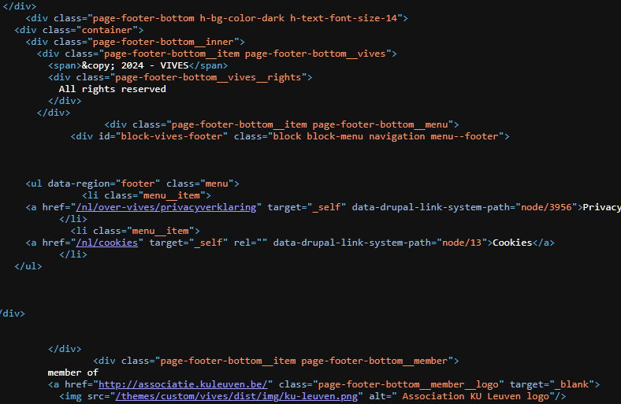
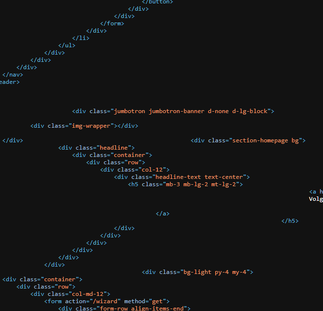

Ik heb de code van de website van Vives met die van Miras vergeleken.
Bij Miras heb ik een heel stuk 'g' tags gevonden die de website van Vives niet had.
De rest van de website ziet er wat hetzelfde uit. Bijde gebruiken ze scripten en er is bij bijde een lange lijst div-tags.
 Bijde gebruiken ze verwijzingen naar stylesheets.